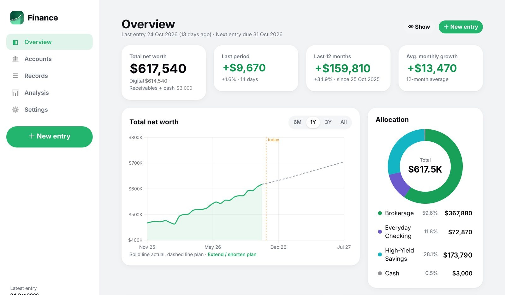
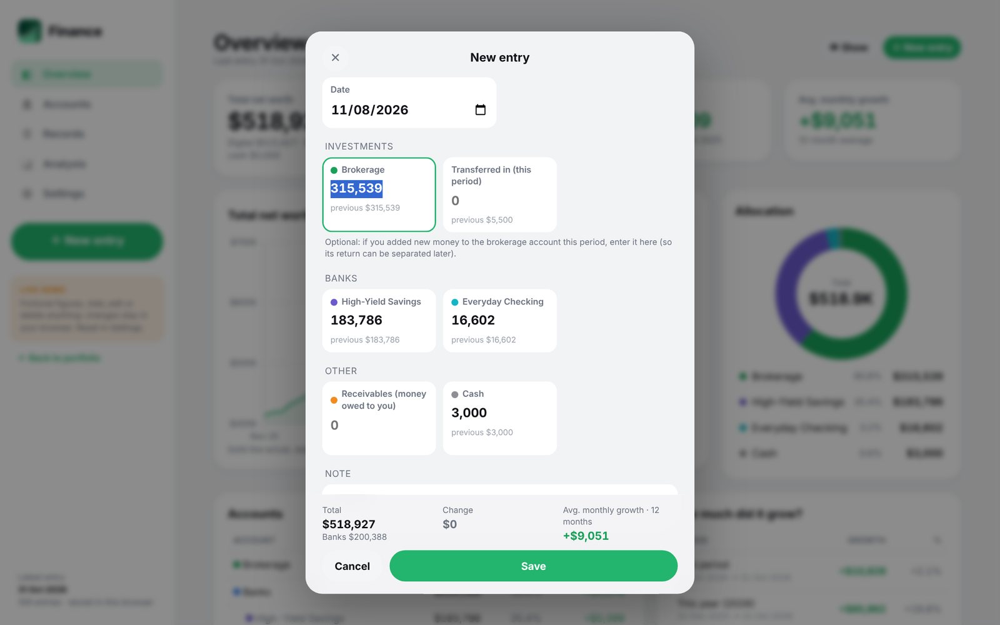
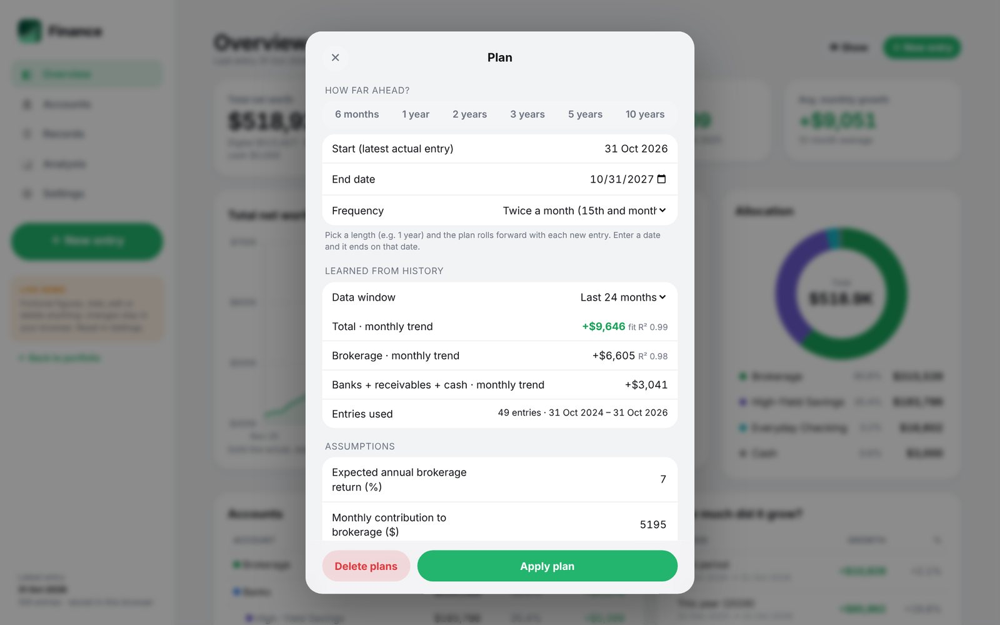
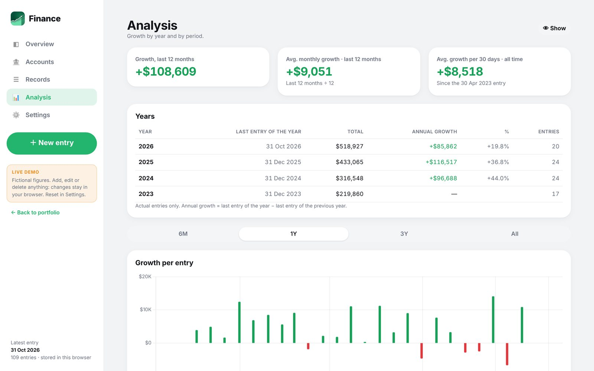
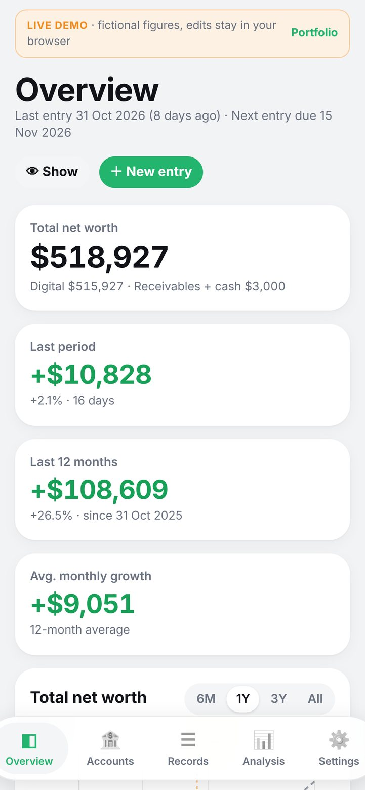

Investment Portfolio Tracker
A private app on Mac and iPhone that brings every account into one view, separates market returns from new savings, and projects where net worth is heading from its own history.
- Role
- Product, design and build, with Claude as coding partner
- Platform
- Mac (web app) and iPhone (SwiftUI)
- Data
- Local only; the public demo uses fictional figures
- Status
- In daily use; live demo available

01 · Problem
What need does it solve?
My savings and investments sit across a brokerage account, several bank accounts, cash and money owed to me. Each one shows a balance for today, but none of them answers the questions I actually care about: how fast is the total growing, how much of that growth is the market and how much is money I put in, and where will it be in a year at this pace?
A spreadsheet answered part of it, but it was slow to update, easy to break and gave no view of the future.
02 · Solution
How it works
Twice a month, on the 15th and at month end, I enter every account on a single screen, with the previous values shown as hints. Everything else is calculated:
- Growth for the last period, this year, the last 12 months and since the first entry
- Each change split into investment gain and new savings, so the two always add up
- A plan line that extends the chart into the future, from a trend fitted to past growth plus the expected brokerage return and monthly contributions
- Year-by-year analysis, per-account drill-downs and a one-click switch that hides every amount








03 · Architecture
How the system fits together
The interface and the calculation engine run in the browser on my Mac. A small Python server that only listens on the computer itself reads and writes a CSV file, and every change is committed to a local git repository, so any past entry can be traced or restored. The iPhone app uses the same file format. The public demo keeps the engine and interface unchanged and only swaps the storage layer for browser storage with fictional data.
04 · Technology
What it is built with
| Interface | HTML, CSS and plain JavaScript modules; no framework and no build step |
|---|---|
| Charts | Chart.js, bundled with the app so it makes no outside requests |
| Engine | engine.js: periods, growth, trend model, plan generator, CSV and JSON import and export |
| Storage | CSV file through a Python server bound to 127.0.0.1; git history of every change |
| iPhone | SwiftUI app reading the same CSV format |
| Public demo | Same engine and screens, browser storage, fictional data with dates relative to today |
05 · Challenges
Hard parts and how they were solved
Telling my money apart from the market's
A rising total can mean strong returns or simply a large deposit. Each entry records how much new money went into the brokerage that period, and the engine splits every change into investment gain and savings so the two always add up. Market drops count as investment losses instead of disappearing inside the total.
Entries that never land on the same interval
Real life does not follow a perfect schedule. Record days are fixed at the 15th and month end, the app suggests the next date, and growth is compared per 30 days so a long gap does not look like a great period.
A forecast that stays honest
The plan comes from a trend fitted to a chosen window of history, with the fit quality shown next to it, then compounds the expected brokerage return and contributions. Plan rows dated before the latest real entry are dropped automatically, so stale projections never mix with actual data.
Private, but still possible to show
Real figures never leave my computer. To make a public demo, only the storage layer changed: the same engine and screens run on fictional data in the visitor's browser.
06 · Results
What came out of it
- One entry screen twice a month replaced a manual spreadsheet routine.
- Every number answers a concrete question: how much I added, how much the market added, and where the total is heading.
- Complete, versioned history: any entry can be traced or restored from git.
- A public demo running the same engine, so anyone can try it without seeing real data.